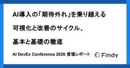
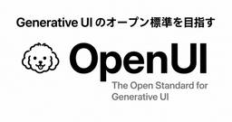
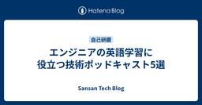
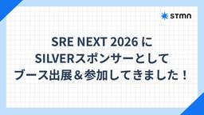

直近1週間の人気フィード
はてなブックマーク数を元に新着優先で並べ替え

みんながAIを使う時、セキュリティについてどう考えればいいのか。 73
73 VISASQ Dev Blog
VISASQ Dev Blog
全社でClaudeを安全に活用するために実践したPoC、ハンズオン、Slack支援、機能制限、MCP・コネクタ管理、OpenTelemetryとBigQueryによる利用状況の可視化をCSIRTから紹介します。心理的安全と技術的安全の両面から、利用者の自由と企業のリスク管理をどう両立したかを解説します。
1日前

AI導入の「期待外れ」を乗り越える ─ 可視化と改善のサイクル、基本と基礎の徹底｜AI DevEx Conference 2026 登壇レポート 26 Findy Tech Blog
Findy Tech Blog
こんにちは。ファインディ株式会社でプリンシパルエンジニアをしている戸田です。普段は開発組織のAI推進を専任で担当しています。 生成AIが開発現場に入り込むようになり、Claude CodeやGitHub Copilotなどのエージェント型ツールも一般的になってきました。 その一方で、「AIを導入したのに、思ったほど速くなっていない」「AI推進を進めていきたいけど何から手を付けたらいいのかわからない」という声を、よく聞くようになりました。 そんな中で先日、弊社主催の「AI DevEx Conference 2026」にて、「生成AI導入の『期待外れ』を乗り越える ─ 開発フロー改革が目指す、真の…
17時間前

フロントエンドに広がりつつある OpenTelemetry：Browser SDK の現在地 106 サイボウズ フロントエンドのフィード
サイボウズ フロントエンドのフィード
OpenTelemetry と聞くと、サーバーサイドのトレースやメトリクスを集めるためのもの、という印象を持っている人は多いと思います。実際、バックエンドでは OpenTelemetry を使った計装をよく見かけるようになりました。一方で、フロントエンドの監視は Sentry や Datadog のような SaaS の SDK に任せることが多く、OpenTelemetry をブラウザの計装に利用する場面はまだ少ないです。ただ、最近は OpenTelemetry のブラウザ向け SDK の開発が進んでおり、この状況も少しずつ変わりはじめています。この記事では、OpenTelemetr...
4日前

Generative UI 用に独自言語を利用する「OpenUI」でUIを構築 51 Taste of Tech Topics
Taste of Tech Topics
FIFAワールドカップが終わりましたね。決勝が3連休中だったこともあり、時間を気にせず楽しめた大塚です。 さて今回は、GitHubのスター数が急増中の、OpenUIというGenerative UI用のライブラリを紹介します。 Generative UIは、チャットのなかでLLMにテキストだけでなくUIを生成させる、という考え方です。 Generative UIの分野はまだ黎明期にありますが、以前からある「json-render」や「A2UI」などと比べて、OpenUIにはどのような違いがあるのかを中心に見ていきます。 github.com 1. はじめに 1.1 Generative UIとは…
3日前

専門外のチームに入ってすぐリードに任命されたときのためのオンボーディング戦略 29 KAKEHASHI Tech Blog
KAKEHASHI Tech Blog
カケハシの認証権限管理基盤チーム所属の萬治です。4月中旬に入社し、5月から kosuiさんと共同でテックリードをしています。入社エントリを書きます。 あなたは、入社して2週間でリードに任命された人を見たことはありますか？ それも、全くの専門外の領域で。 テックリードを拝命して2ヶ月半 (執筆時点)、どのように振る舞いどんな意識で仕事をしてきたかと、新人をオンボーディングしやすい環境について話そうと思います。 何もかも専門ではなかったところからのスタート 僕は実はカケハシの選考応募時点では認証権限管理基盤チームに応募していたわけではありません。Platform領域を志望してはいたものの、最初に応…
2日前

Claude CodeやCodexのサンドボックスを支えるbubblewrapを自作して理解する。その勢いでDockerも理解する 91 エムスリーテックブログ
エムスリーテックブログ
こんにちは、エンジニアリンググループSREチームGeneral Managerの横本(@yokomotod)です。 この記事はSREチームブログリレーの4日目の記事です。前回は山本さんによるAWS DevOps Agentの記事でした。手書きの図が上手過ぎじゃないですかね。 www.m3tech.blog さて、Claude Code や Codex のサンドボックス機能*1は使われていますでしょうか。安全かつ快適に使いこなすためにも、どういう仕組みによって隔離されているのか気になりますよね。 サンドボックスの実現方法はOSによって異なりますが、この記事ではLinuxでのサンドボックス化に使わ…
4日前

開発しているだけで進捗が更新される。Linear × Claude Code × GitHubで作る開発フロー 24 株式会社エクスプラザのフィード
Claude Codeを使うようになって、実装にかかる時間はかなり短くなりました。ただ、開発が速くなっても、タスクを作る、着手状態にする、PRを紐付ける、レビュー中に変える、完了にする、といった管理作業は残ります。1回ごとの操作は小さくても、開発の途中で何度もLinearを開くのは地味に面倒です。更新を忘れると、ボードと実際の進捗もずれていきます。現在はNotion、Claude Code、Linear、GitHubをつなぎ、仕様の整理から実装、レビュー、タスク完了までを次のように進めています。Notionに仕様をまとめる ↓Claudeと設計を詰める ...
2日前

AI時代の知見ライブラリ「Findy Library」を公開しました 33 Findy Tech Blog
こんにちは。ファインディ株式会社でプリンシパルエンジニアをしている戸田です。普段は開発組織のAI推進を担当しています。 このたび、ファインディが社内で実践している知見をまとめたドキュメントサイト「Findy Library」を公開しました。 lib.findy.co.jp Findy Libraryの特徴は、人が読むことだけを想定していない点です。すべてのページはブラウザで読めるWeb版に加えて、生のMarkdownとしても配信されており、Claude CodeやCursorといったAIエージェントに直接読み込ませて開発ワークフローに組み込めるように設計されています。 この記事ではFindy …
3日前

CSS text-autospaceを導入しました 59 NTT docomo Business Engineers' Blog
NTT docomo Business Engineers' Blog
最近、新たなCSSプロパティ text-autospace が主要なWebブラウザーでサポートされました。どうしても和文と欧文の交ぜ書きが多くなる技術ブログにおいて、待望のプロパティです。そのあらましと、このブログにおける採用について紹介します。 やったこと 背景 将来 デジタル改革推進部の小林です。普段は社内ID基盤のプロダクトオーナーをやっています。きょうはブログ運営チームの一員として、この記事を書いています。 この記事のエッセンスとしては「やったこと」と「将来」をお読みいただければ十分ご理解いただけることと思います。「背景」は読み物としてお楽しみください。 やったこと 2026年6月末に…
4日前
WordPressの深刻度「緊急」脆弱性 wp2shell の概要と対応指針 218 GMO Flatt Security Blog
GMO Flatt Security Blog
2026年7月17日、認証不要でリモートからの任意コード実行（RCE）につながる脆弱性「CVE-2026-63030」「CVE-2026-60137」を修正したWordPress 6.8.6、6.9.5、および 7.0.2 が公開されました（参考：WordPress 7.0.2 Release）。Searchlight Cyber の Adam Kues 氏により報告された脆弱性です。 弊社 GMO Flatt Security リサーチチームの追加検証では、脆弱なバージョンでは標準構成でも、管理者の認証情報等を要さずに、リモートからの任意コード実行が可能である と判断しています。直近発見され…
6日前

Canvas に流れるコメントを E2E でどう検証するか 27 ドワンゴ教育サービス開発者ブログ
ドワンゴ教育サービス開発者ブログ
はじめに 背景：リアルタイム配信基盤の移行 canvas の中を流れるコメントは直接読めない canvas のスクリーンショットを撮って OCR で読む ハマりどころと工夫 背景の動画で OCR が誤読する 日本語 OCR が弱い 固定待機の限界 配信経路の「暖機」 AI にパラメータ探索ループを回させた話 最初は読み取りが安定しなかった やったこと: 評価ループを AI に肩代わりさせる 収束した結論（＝いまのコードに残っている設定） このテストで保証できること / できないこと 保証できること 保証できないこと まとめ はじめに 株式会社ドワンゴの教育事業本部で、学習サービス「ZEN St…
3日前

検索画面のUI設計で、バックエンドエンジニアが早めに口出しすべき3つのこと 189 NCDC テックブログのフィード
はじめに検索画面のUIを決める会議では、「この条件、とりあえずあいまい検索でお願いします」「並び替えはとりあえず全部入れましょう」といったやりとりがよく発生します。その結果、後からバックエンドで検索速度に困る、という経験を何度かしました。私が働いているNCDCでは、PMだけでなくデザイナーやエンジニアも要件定義や基本設計の会議に参加することが多いです。業務システムの画面は、デザイナーさんが作ったFigmaを元にお客さんとUIを決めていくのですが、議論の主体はデザイナーさんで、エンジニアは気になった時だけ発言する、というスタンスが多いかなぁと思います。本記事では、業務システムの検...
5日前

"ネットワークシステムについて語るときに我々の語ること" の感想文 40 HERP TechHub
HERP TechHub
"ネットワークシステムについて語るときに我々の語ること" を読んだ。最近業務においてネットワーク周りの設定をいじる機会も増えてきていて、「istio の ambient mode 有効にしていきまし
4日前

Claude CodeでFable5を「ここぞ」という場面だけ使う運用（opusplan活用） 36 株式会社ZOZOのフィード
概要Claude Codeで利用できるモデルの一つである Fable5 は、性能が非常に高い一方でトークン消費量も大きいモデルです。すべてのやり取りをFable5で行うと、トークン消費（コストやレイテンシ）の面で効率が悪くなってしまいます。この記事では、Fable5の高い性能を「本当に必要な場面」だけで活かしつつ、それ以外の場面では軽量なモデルに切り替えることで、効率的にClaude Codeを運用するための設定方法を紹介します。 前提Claude Codeがインストール・セットアップ済みであること~/.claude/settings.json（ユーザー設定）またはプ...
3日前

Claude の利用状況を OpenTelemetry Collector で BigQuery に流し込んで可視化できるようにした 13 VISASQ Dev Blog
🤖 AI執筆について この記事は AI（Claude）が執筆し、筆者が修正・加筆を行なっています。 はじめに こんにちは！インフラチームの高畑です。 最近あまりにも暑すぎますね、まだ 7 月ですよ？この調子で気温が上がっていったら 8 月には溶けて無くなりそうな予感がしています。 皆さんも溶けてしまわないように体調には十分にお気をつけください。 というわけで今回は、Claude Code / Chat / Cowork といった各プロダクトの利用状況を OpenTelemetry Collector 経由で BigQuery に流し込み、社内で可視化できるようにした話を書いていきます。 事の発…
3日前

Go 1.27 から uuid 実装がサポートされる！ので個人的に気になった議論とその着地をまとめてみた 7 LayerXのフィード
はじめにこんにちは、バクラク事業部アカウント基盤開発部IDチームの @convto です。各種利用サービスのIDに一貫性があり、 GitHub も X も大体 convto を確保できているのが密かな自慢です。やはりIDチーム所属なので、自分のIDにも一貫性が必要とされています。(諸説あり)さてIDチームに所属しているので当然 uuid のニュースには目を光らせているわけですが、 Go 1.27 からは標準ライブラリに uuid が追加される見込みですね！ドラフト版のリリースノートみて気になった人もいるのではないでしょうか！https://go.dev/doc/go1.27パ...
1日前
oRPC を調査したら、Rails + Nuxt の自分たちのスタックが思ったより型安全だと気づいた話 22 kickflow Tech Blog
kickflow Tech Blog
oRPC の調査イメージ こんにちは、kickflow でエンジニアをしている芳賀です。 最近、TypeScript 界隈で oRPC というフレームワークの名前をよく見かけるようになりました。「tRPC の開発体験そのままに、OpenAPI も一級市民として扱える」という触れ込みで、OpenAPI を軸に API を運用している身としてはかなり気になる存在です。 kickflow のバックエンドは Rails、フロントエンドは Nuxt で、API は OpenAPI の YAML を手書きする spec-first 運用をしています。この構成で日々開発していると「サーバーの実装とスキーマと…
4日前
実装前に品質を上げるために始めた「QAとの事前打ち合わせ」 6 DRESS CODE TECH BLOGのフィード
はじめにこの記事は Dress Code Advent Calendar 2026/07 の 17日目の記事です。こんにちは。DRESS CODE 株式会社でプロダクトエンジニアをしている西銘です。DRESS CODE の開発では、PdM が機能チケットを作成し、そこに記載された仕様をもとに開発者が実装するフローが一般的です（チケットの粒度は、画面デザインまで書かれたものから機能名だけなど様々です）。進め方は各開発者に委ねられますが、私が実装前に品質を上げるために取り組んでいる「QA との事前打ち合わせ」 を紹介します。開発の進め方の一つとして参考になれば幸いです。 ...
1日前

ACL 2026の概要とPersonalization系論文の紹介 4 NTT docomo Business Engineers' Blog
本記事は先日開催されたACL 2026についてのものです。 ACL 2026は計算言語学や自然言語処理に関するTier1の国際会議であり、昨今流行りのLLMや生成AIに関する研究も多く発表されています。 ここではACL 2026がどのような国際会議かということについて、開催規模や投稿論文の傾向などの観点から紹介します。 またACL 2026に採択された論文の中から一部を取り上げ、その内容について説明します。 はじめに ACLについて 開催規模 論文数の増加と生成AI対策 採択傾向 Best Papers 論文紹介 ClusterRAG: Cluster-Based Collaborative …
1日前

SREがPRD読み合わせ会に顔を出している話 11 Nealle Developer's Blog
Nealle Developer's Blog
なぜSREの自分がPRDを読むのか こんにちは、kuboです。 私は現在ニーリーでSREをしています。日々やっていることは、インフラの運用、監視とその設計、本番作業、障害対応といった、いわゆる「システム・プロダクトを支える」側の仕事がメインです。 そんな自分は入社して以来、週2回開催されている「PRD読み合わせ会」（※）に継続して参加するようにしています。 ※PRDとはProduct Requirements Document（プロダクト要求仕様書）の略称で、何を作るか・なぜ作るかをまとめたドキュメントです。PRD読み合わせ会は、プロダクトエンジニア・デザイナー・QAが必須参加のミーティングと…
3日前

vLLMのおすすめオプション設定 3 赤帽エンジニアブログ
赤帽エンジニアブログ
こんにちは、レッドハットでソリューションアーキテクトをしている石川です。 みなさんvLLM使っていますか？ vLLMはオープンモデルの推論を行うため、多くのユーザーや企業などで利用されているOSSです。 レッドハットは昨年のNeural Magicの買収を契機として、主要なコントリビューターの一社としてvLLMの開発を推進しています。現在では、vLLMの本体だけではなく、量子化ツールのLLM Compressor、Speculative Decodingのドラフトモデルを作成するSpeculatorsなど、様々なサブプロジェクトについても積極的に取り組んでいます。 そんなvLLMですが、利用す…
1日前

エンジニアの英語学習に役立つ技術ポッドキャスト5選 3 Sansan Tech Blog
Sansan Tech Blog
技術本部 Data Intelligence Engineering Unitの Makoto Nagai です。 Sansanに入社して2年ほどになりますが、それ以前は海外で6年ほど働いていました。 海外で働いている間は英語を日常的に使う機会がありましたが、日本にいると英語を使う機会が少ないため、英語力を維持できるように意識して勉強しています。 エンジニアが英語を勉強する上で、技術ポッドキャストはよい教材です！ 設計や技術議論に使うフレーズが多く、たとえば What are the trade-offs? は設計議論で使えますし、Can you walk us through the arc…
2日前

Cycloud 新基盤の全貌 第一回: 新リージョン基盤の全体像 8
 CyberAgent Developers Blog | サイバーエージェント デベロッパーズブログ
CyberAgent Developers Blog | サイバーエージェント デベロッパーズブログ
はじめに はじめまして。CyberAgent group Infrastructure Unit（C ...
4日前

SRE NEXT 2026 にSILVERスポンサーとしてブース出展＆参加してきました！ 3 stmn tech blog
stmn tech blog
こんにちは！株式会社スタメン、プラットフォーム部のもりしたです。 7月10日（金）・11日（土）の2日間、東京のTOC有明で開催された SRE NEXT 2026 に参加してきました！ 昨年の SRE NEXT 2025（昨年のブログはこちら）ではLOGOスポンサーとしての参加でしたが、今年はSILVERスポンサーとしてブース出展を行いました。 本記事では、ブース企画の様子と印象に残ったセッションについてレポートします。 SRE NEXT 2026 スポンサーボードの前で記念撮影。SILVERスポンサーにスタメンのロゴが！ SRE NEXT 2026 の雰囲気 昨年に引き続き、TOC有明での開…
3日前

組織ツリーの一覧表示、深さ優先と幅優先どっちが正解？ 5 DRESS CODE TECH BLOGのフィード
はじめにこのブログは Dress Code Advent Calendar 2026/07 の 15 日目の記事です。人事系の SaaS には、組織の並びを見せる画面がだいたい 2 つあります。ひとつは 組織図 で、「営業本部の下に営業1部がある」といった親子のつながりを枝分かれの形で見せます。もうひとつは 部署一覧 で、同じデータを上から下へのシンプルなリストで見せます。元は同じ部署データなのに、この 2 つで並び順がズレていると、ユーザーは「あれ？」と混乱します。「組織図では営業本部の下に営業1部があるのに、一覧では開発本部のあとに営業1部が来る」こういう問い合わせが来たの...
4日前

月18万行のコーディングを走り切った話 3 株式会社イノベーション Tech Blogのフィード
タイトルの「月18万行」はリファクタリングに伴うコードの移動や削除も含んだ数字なので、生産性の指標としてはあまり参考になりません。キャッチーなのでタイトルに使いましたが、インパクト重視の数字だと思って読んでください。本記事で伝えたいのは行数ではなく、「AIをパンクさせないためには何を整えるべきか」 という話です。 はじめにこんにちは、ミッシーと申します。株式会社イノベーションでEMとして複数チームのマネジメントをしています。今回はITトレンドマネー/みんなのマネースコアの開発プロジェクトで、2ヶ月かかる想定だった機能をコードベースのリファクタリング込みで1ヶ月でリリースした際...
3日前